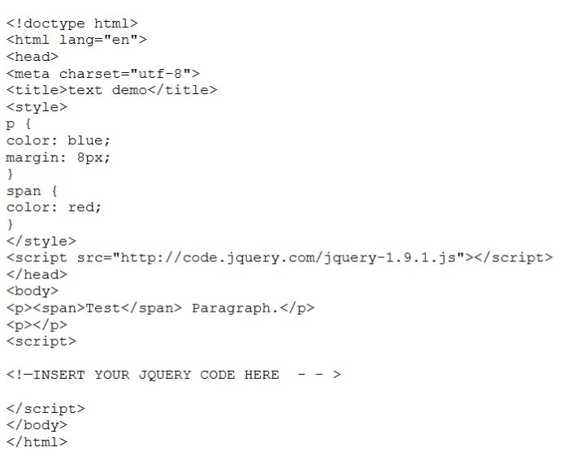
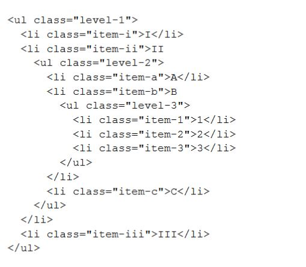
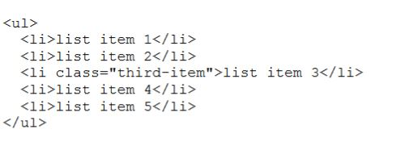
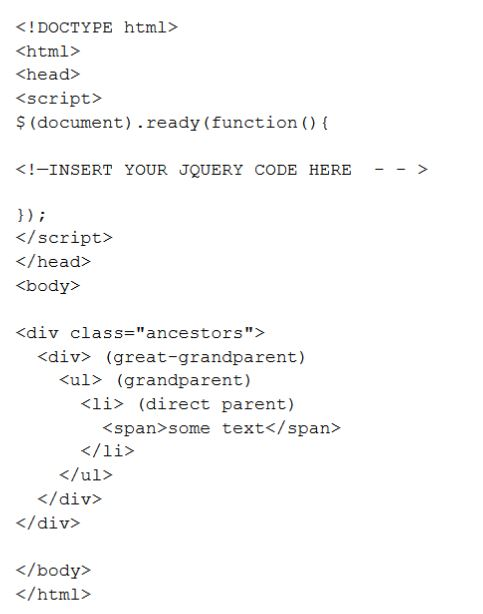

-
Find the text in the first paragraph (stripping out the html), then set the html
of the last paragraph to show it is just text (the red bold is gone).
var str = $("p").first().text(); $("p").last().text(str);OR$block= $("p").first().detach(); $("p").last().after($block); -
Write jQuery code to create a red background for the level-2 list items
$("ul.level-2").children().css("background-color", "red"); -
Write jQuery code to select the element that comes immediately before item three and change its
background color to blue.
$("#third-item").prev().css("background-color", "blue"); -
Let us one additional requirement for the "Go Vegetarian" button of the
Webville Eatery Menu described in Chapter 4 of Head First jQuery: "Turkey"
in the ingredient list of any entree is replaced by "Mashed Potatoes" in the
vegetarian version. You may assume there is a class "turkey" that identifies
these items in the list. Describe the changes to the Javascript (jQuery) code to
implement this new requirement.
$(".turkey").replaceWith("<li class='mashed_potatoes'><em>Mashed Potatoes</em></li>"); -
Write Javascript (jQuery) code to change the color of the parent and
grandparent list items of the span of text ("some text") in the following to
green
$("span").parent().css("color", "green"); $("span").parent().parent().css("color", "green");